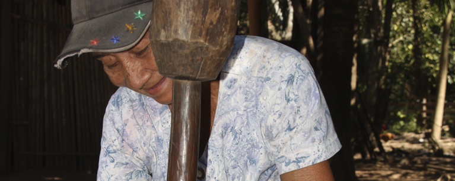

El Gran Diálogo Nacional se llevó a cabo el 14 y 15 de julio de 2021 y fue organizado por el Ministerio de Relaciones Exteriores, la ONU Bolivia y el Fondo para el Desarrollo de los Pueblos Indígenas de América Latina y el Caribe (FILAC). Los resultados que se tuvieron de este Diálogo fueron la aportación y validación de los documentos de la posición del país. Asimismo, tanto las autoridades nacionales como internacionales realizaron un balance y ponderaron los diálogos en Bolivia por ser un proceso inclusivo y participativo.

Diálogos Nacionales
Los Diálogos Nacionales se llevaron a cabo mediante división de sectores. La participación se dividió en grupos de estudiantes e investigadores, organizaciones, instituciones, organizaciones, empresas y entidades tanto públicas como privadas de los nueve departamentos de Bolivia. También hubo separación en base a estos departamentos, por lo que hubo un diálogos regionales del Altiplano (La Paz, Oruro y Potosí), del Valle (Cochabamba, Chuquisaca y Tarija) y del Llano y la Amazonia (Pando, Beni y Santa Cruz). Por último, hubo un diálogo específicamente desarrollado con conformantes de los pueblos indígenas originarios campesinos. De esto se puede concluir que se presentó un interés por fomentar una discusión variada y desde distintos puntos de vista, en dependencia del trabajo que desarrollan y de la región en la que habitan.
Portal Web informativo sobre el proceso del Estado Plurinacional de Bolivia rumbo a la Cumbre de las Naciones Unidas sobre los Sistemas Alimentarios 2021.
Sitio desarrollado por el Ministerio de Relaciones Exteriores de Bolivia y el Sistema de las Naciones Unidas en Bolivia. Todos los derechos reservados.